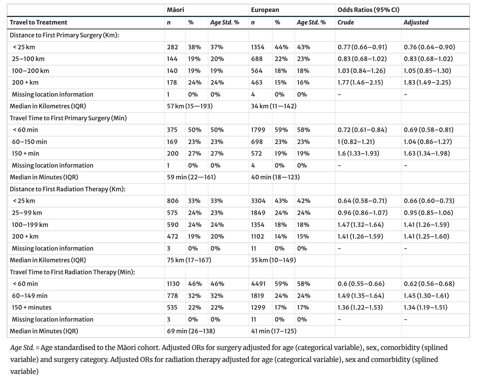

Technology Risks
Introduction
Beyond its opportunities, telesurgery risks deepening disparities through network latency, infrastructural gaps, and legal ambiguity.
The Healthcare Gap
The central risk of telesurgery is that it might widen the gap it promises to close. It relies on expensive robotics, low-latency networks and trained local professionals (Dohler et al, 2024; Saikali et al., 2024), which rural and underdeveloped regions lack. Godley et al. (2025) identify cost as a major technical issue to consider. Ouda et al. (2026) also note that rural areas lack the infrastructure for 5G, and their satellite alternatives has only been tested in simulations. In New Zealand, the local workforce is itself the weak point. Only 14.3% of general surgeons work rurally (Cowan et al., 2025), and Maori already travel further for lung cancer surgery than Europeans (see Figure 3; Gurney et al., 2024). A remote surgeon cannot replace the bedside team, so these inequities could persist.
Figure 3
Surgical Volume Comparison for Māori and European Patients in New Zealand

Patient Safety
Patient safety is the second risk. Latency under 200ms is considered ideal (Motiwala et al., 2025), and delays reduce surgical performance (Xu et al., 2014). Cheaper public connections with fluctuation outside of the ideal are the likeliest option for poorer regions, so those patients could face higher risk from the technology meant to help them. The evidence base is also thin. Only eight human studies of remote telesurgery were published between 2001 and 2020 (Barba et al., 2022). Since 2020, this has shifted with a large case rise, though long-term outcomes remain largely unknown.
Liability and Accountability
Third, accountability is unresolved. Godley et al. (2025) ask whether liability should rest with the remote surgeon, the manufacturer or the bedside assistant. Where autonomous systems are involved, blame still tends to fall on the surgeon (Jamjoom et al., 2022). Across borders, billing, training and liability rules differ (Elendu et al., 2025), and Moschovas et al. (2025) concede that international legal and ethical disparities block widespread adoption. We argue that patients in low-resource settings are least able to seek redress when harm occurs, so unclear liability falls hardest on them.
Conclusion
As remote technologies mature and enter mainstream surgical practice, innovators and policy-makers must continually return to their core humanitarian purpose, thoroughly addressing network, financial, and legal complexities to ensure safe and ethical integration.
Made 16 September 2026by Sofia Malveda (based on template). Edited 12 October 2026
by Jean-Ray.
thanks to W3C for tutorial and adapted code from Style Examples
also thanks to WDN for HTML and CSS resources and any adapted code snippets from Mozilla Developer Network